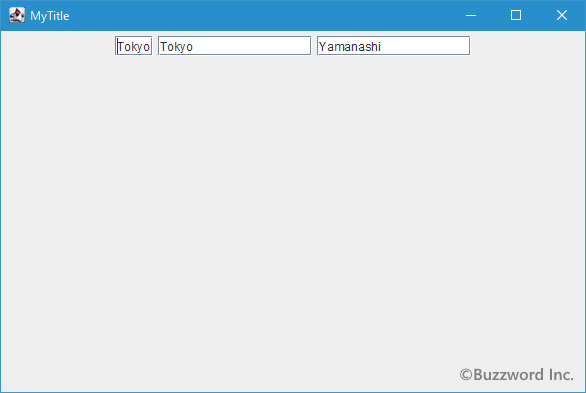

テキストフィールドの作成と初期値や列数(幅)の設定
テキストフィールドを作成するには JTextField クラスを使用します。ここでは JTextField クラスの定義やコンストラクトについて確認します。またテキストフィールドに初期値として値を設定する方法やテキストフィールドの列数(幅)を設定する方法も解説します。
JTextFieldクラスの定義
JTextField クラスは次のように定義されています。
java.lang.Object
java.awt.Component
java.awt.Container
javax.swing.JComponent
javax.swing.text.JTextComponent
javax.swing.JTextField
public class JLabel
extends JComponent
implements SwingConstants, Accessible
テキストフィールドはコンポーネントの親クラスである JComponent クラスのサブクラスとなっています。またテキストを扱うクラス全般の親クラスである JTextComponent クラスのサブクラスでもあります。
JTextFieldクラスのコンストラクタ
JTextField クラスをを利用するにはコンストラクタを使って JTextField クラスのオブジェクトを作成します。次のようなコンストラクタが用意されています。
JTextField()
新しいTextFieldを構築します。
JTextField?(int columns)
指定された列数で新規の空のTextFieldを構築します。
JTextField?(String text)
指定されたテキストで初期化された新しいTextFieldを構築します。
JTextField?(String text, int columns)
指定されたテキストおよび列で初期化される新規TextFieldを構築します。
JTextField?(Document doc, String text, int columns)
指定されたテキスト・ストレージ・モデルと列数を使用する新規のJTextFieldを構築します。
テキストフィールドに初期値を設定するかどうか、またテキストフィールドの列数を設定するかどうかでコンストラクタを選択してください。
次のコンストラクタでは初期値が null で列数が 0 のテキストフィールドを作成します。
public JTextField()
新しいTextFieldを構築します。 デフォルト・モデルが作成され、初期文字列はnullで、列数が0に設定されます。
実際の使い方は次のようになります。
JTextField text = new JTextField();
列が 0 では利用者がテキストを入力できないのでメソッドを使って列数を設定してから使用します。
テキストフィールドの列数を設定する
テキストフィールドを列数を指定して作成するには次のコンストラクタを使用します。
public JTextField?(int columns)
指定された列数で新規の空のTextFieldを構築します。 デフォルト・モデルが作成され、初期文字列はnullに設定されます。
パラメータ:
columns - 適切な幅の計算に使用する列数。列数を0に設定すると、適切な幅はコンポーネントの実装から自然に得られる値になる
引数にはテキストフィールドの見た目のサイズを決定するための列数を指定します。
テキストフィールドの列数とは文字数と考えてください。例えば 10 と指定すれば 10文字分の文字が表示できるだけの幅となります。ただし 文字はそれぞれ幅が違うので、どんな文字でも 10 文字ぴったりとなるわけではありません。またあくまで見た目のサイズなので入力できる文字数とは関係がありません。フォントの設定によっても実際のサイズは変わってくるので、厳密にピクセル単位でサイズを指定するには別のページで解説する setPreferredSize メソッドを使います。
実際の使い方は次のようになります。
JTextField text = new JTextField(10);
またテキストフィールドを作成したあとで、列数を設定したり再設定したりすることができます。テキストフィールドの列数を設定するには JTextField クラスで用意されている setColumns メソッドを使います。
public void setColumns?(int columns)
このTextFieldの列数を設定し、配置を無効にします。
パラメータ:
columns - 列数>= 0
例外:
IllegalArgumentException - columnsが0より小さい場合
引数にはテキストフィールドの見た目のサイズを決定するための列数を指定します。
実際の使い方は次のようになります。
JTextField text = new JTextField(); text.setColumns?(10);
サンプルプログラム
それでは簡単なサンプルプログラムを作って試してみます。テキストエディタで次のように記述したあと、 JSample1_1.java という名前で保存します。
import javax.swing.JFrame;
import javax.swing.JTextField;
import javax.swing.JPanel;
import java.awt.Container;
import java.awt.BorderLayout;
class JSample1_1 extends JFrame{
public static void main(String args[]){
JSample1_1 frame = new JSample1_1("MyTitle");
frame.setVisible(true);
}
JSample1_1(String title){
setTitle(title);
setBounds(100, 100, 600, 400);
setDefaultCloseOperation(JFrame.EXIT_ON_CLOSE);
JTextField text1 = new JTextField();
JTextField text2 = new JTextField(10);
JTextField text3 = new JTextField();
text3.setColumns(20);
JPanel p = new JPanel();
p.add(text1);
p.add(text2);
p.add(text3);
Container contentPane = getContentPane();
contentPane.add(p, BorderLayout.CENTER);
}
}
次のようにコンパイルを行います。
javac JSample1_1.java
コンパイルが終わりましたら実行します。
java JSample1_1
テキストフィールドを 3 つ追加しました。 1 つ目は引数なしのコンストラクタで作成したテキストフィールド、 2 つ目は列数を指定して作成したテキストフィールド、 3 つ目は引数なしのコンストラクタで作成したあとで列数を設定したテキストフィールドです。
テキストフィールドには利用者がテキストを入力することができます。
テキストフィールドに初期値を設定する
テキストフィールドは利用者にテキストを入力してもらうためのコンポーネントですが、初期値として指定した文字列を設定しておくことができます。テキストフィールドを初期値を指定して作成するには次のコンストラクタを使用します。
public JTextField?(String text)
指定されたテキストで初期化された新しいTextFieldを構築します。 デフォルト・モデルが作成され、列数は0です。
パラメータ:
text - 表示されるテキストまたはnull
引数には初期値として入力される文字列を String クラスのオブジェクトを使って指定します。このコンストラクタを使用した場合、テキストフィールドのサイズは引数に指定した文字列がちょうど表示されるだけのサイズに設定されます。
また初期値に加えて列数を合わせて指定することもできます。次のコンストラクタを使用します。
public JTextField?(String text,
int columns)
指定されたテキストおよび列で初期化される新規TextFieldを構築します。 デフォルト・モデルが作成されます。
パラメータ:
text - 表示されるテキストまたはnull
columns - 適切な幅の計算に使用する列数。列数を0に設定すると、適切な幅はコンポーネントの実装から自然に得られる値になる
1 番目の引数には初期値として入力される文字列を String クラスのオブジェクトを使って指定します。 2 番目の引数にはテキストフィールドの見た目のサイズを決定するための列数を指定します。
実際の使い方は次のようになります。
JTextField text1 = new JTextField("Tokyo");
JTextField text2 = new JTextField("Tokyo", 10);
-- --
テキストフィールドのオブジェクトを作成したあとで、テキストフィールドに初期値を設定することもできます。 JTextField クラスの親クラスである JTextComponent クラスで用意されている setText メソッドを使います。
public void setText?(String t)
このTextComponentのテキストに、指定されたテキストを設定します。 テキストがnullまたは空の場合は、古いテキストを単に削除する効果があります。 テキストが挿入されたときに結果として得られるキャレット位置は、キャレット・クラスの実装によって決定されます。
テキストはバウンド・プロパティではないため、それが変更されてもPropertyChangeEvent はトリガーされません。 テキストの変更を待機するには、DocumentListenerを使用してください。
パラメータ:
t - 設定する新しいテキスト
引数には初期値として入力される文字列を String クラスのオブジェクトを使って指定します。このメソッドを実行した場合、対象のテキストフィールドに列数が明示的に設定されていた場合にはサイズの変更はありませんが、列数が設定されていなかった場合にはテキストフィールドのサイズは引数に指定した文字列がちょうど表示されるだけのサイズに設定されます。
実際の使い方は次のようになります。
JTextField text = new JTextField("Tokyo");
text.setText?("Osaka");
サンプルプログラム
それでは簡単なサンプルプログラムを作って試してみます。テキストエディタで次のように記述したあと、 JSample1_2.java という名前で保存します。
import javax.swing.JFrame;
import javax.swing.JTextField;
import javax.swing.JPanel;
import java.awt.Container;
import java.awt.BorderLayout;
class JSample1_2 extends JFrame{
public static void main(String args[]){
JSample1_2 frame = new JSample1_2("MyTitle");
frame.setVisible(true);
}
JSample1_2(String title){
setTitle(title);
setBounds(100, 100, 600, 400);
setDefaultCloseOperation(JFrame.EXIT_ON_CLOSE);
JTextField text1 = new JTextField("Tokyo");
JTextField text2 = new JTextField("Tokyo", 15);
JTextField text3 = new JTextField("Tokyo", 15);
text3.setText("Yamanashi");
JPanel p = new JPanel();
p.add(text1);
p.add(text2);
p.add(text3);
Container contentPane = getContentPane();
contentPane.add(p, BorderLayout.CENTER);
}
}
次のようにコンパイルを行います。
javac JSample1_2.java
コンパイルが終わりましたら実行します。
java JSample1_2
テキストフィールドを 3 つ追加しました。 1 つ目は初期値を指定したコンストラクタで作成したテキストフィールド、 2 つ目は初期値と列数を指定して作成したテキストフィールド、 3 つ目は初期値と引数を指定して作成したあとで初期値を別の文字列で設定しなおしたテキストフィールドです。

テキストフィールドの初期値は利用者が自由に修正したり削除して新しい値を入力することができます。
-- --
JTextField クラスの定義やコンストラクトについて確認し、またテキストフィールドに初期値として値を設定する方法やテキストフィールドの列数(幅)を設定する方法も解説しました。
( Written by Tatsuo Ikura )

著者 / TATSUO IKURA
初心者～中級者の方を対象としたプログラミング方法や開発環境の構築の解説を行うサイトの運営を行っています。